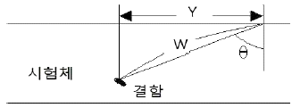

초음파비파괴검사기능사 (2007-07-15 기출문제)
1과목: 초음파탐상시험법
1. 침투탐상검사의 특성에 대한 설명으로 잘못된 것은?
- 큰 시험체의 부분 검사에 편리하다.
- 거친 표면에서의 불연속 검출에 탁월하다.
- 표면의 균열이나 불연속을 측정하는데 유리하다.
- 서로 다른 탐상액을 혼합하여 사용하면 감도에 변화가 생긴다.
(정답률: 알수없음)

2. 자분탐상시험시 코일의 감은 수가 10회, L/D의 비가 3인 강봉을 코일법으로 검사할 때 요구되는 전류(A)는? (단, L은 봉의 길이, D 는 외경이다.)
- 30
- 700
- 1167
- 1500
(정답률: 60%)
3. 일반적으로 두 물질의 경계면에 수직으로 음파가 입사할 때 음파는 경계면에서 반사하는 성분과 통과하는 성분으로 나뉘어 진다. 이 두 개로 나뉘어 지는 비율은 경계면에 접하는 무엇에 따라 정해지는가?
- 불감대
- 근거리음장
- 증폭직진성
- 음향임피던스
(정답률: 알수없음)
4. 다음 중 횡파가 존재할 수 있는 물질은?
- 물
- 공기
- 오일
- 아크릴
(정답률: 알수없음)
5. 다음 중 모든 조건이 동일할 때 속도가 가장 큰 진동 모형은 어느 것인가?
- 횡파
- 종파
- 표면파
- 전달파
(정답률: 알수없음)
6. 매질 내에서 초음파의 전달 속도는 무엇에 의해 가장 큰 영향을 받는가?
- 밀도와 탄성계수
- 자속밀도와 소성
- 선팽창계수와 투과율
- 침투력과 표면장력
(정답률: 73%)
7. 일반적으로 물에서의 음속은 약 몇 m/s 인가?
- 330
- 340
- 1500
- 5900
(정답률: 알수없음)
8. 두 매질의 접촉면에서 동일 파의 입사각과 반사각의 크기를 비교할 때 그 관계를 올바르게 설명한 것은?
- 반사각과 입사각은 동일하다.
- 반사각은 입사각의 √2배 정도이다.
- 반사각은 항상 입사각의 2배 정도이다.
- 반사각은 항상 입사각의 약 1/2정도이다.
(정답률: 알수없음)
9. 다음 중 티탄산바륨 진동자의 주된 특징으로 옳은 것은?
- 사용수명이 가장 길다.
- 내마모성이 우수하다.
- 송신효율이 우수하다.
- 가장 높은 온도에서 사용할 수 있다.
(정답률: 100%)
10. 종파속도가 6km/s 인 재질을 지름12mm, 2.5MHz 탐촉자로 탐상할 때 근거리음장의 길이(near field length)는 몇 mm 인가?
- 1.25
- 1.50
- 12.5
- 15.0
(정답률: 알수없음)
11. 다음과 같은 주파수의 탐촉자를 사용할 때 일반적으로 음의 감쇠가 가장 심한 탐촉자의 주파수는 어느 것인가?
- 0.5MHz 탐촉자
- 1.0MHz 탐촉자
- 2.5MHz 탐촉자
- 5.0MHz 탐촉자
(정답률: 알수없음)
12. 초음파 탐상장비 중 에코의 음압을 전압으로 변화시키는 것을 무엇이라 하는가?
- 게인
- 리젝션
- 탐촉자
- 접촉매질
(정답률: 58%)
13. 초음파탐상검사에서 수동으로 탐상면을 따라 움직이는 탐촉자의 이동을 무엇이라 하는가?
- 감쇠
- 주사
- 공진
- 운동
(정답률: 알수없음)
14. 다음 중 물질 내부의 결함을 검출하기 위해 비파괴검사법으로만 나열된 것은?
- 와전류탐상검사, 누설검사
- 자분탐상검사, 침투탐상검사
- 초음파탐상검사, 방사선투과검사
- 침투탐상검사, 와전류탐상검사
(정답률: 알수없음)
15. 압연한 판재의 라미네이션(Lamination) 검사에 가장 적합한 초음파탐상 시험방법은?
- 수직법
- 사각법
- 판파법
- 평면파법
(정답률: 알수없음)
16. 저주파수의 음파를 얇은 물질의 초음파탐상시험에 주로 사용하지 않는 가장 큰 이유는?
- 불완전한 음파이기 때문에
- 저주파수의 음파는 감쇠가 빨라서
- 표면하의 분해능이 나쁘기 때문에
- 침투력의 감쇠가 빨라 효율성이 떨어지므로
(정답률: 60%)
17. 그림과 같은 경사각탐상시험에서 표면거리(y)를 구하는 식으로 옳은 것은?

- W(빔거리) ｘ sinθ
- W(빔거리) ｘ cosθ
- \(빔거리) ｘ tanθ
- W(빔거리) ｘ cotθ
(정답률: 알수없음)
18. 다음 중 공진법을 이용한 초음파탐상시험이 가장 적합한 경우는?
- 아주 큰 기포가 있을 경우
- 아주 긴 장축 단조물일 경우
- 알루미늄판의 얇은 두께를 측정할 경우
- 아주 작은 기포가 많이 모여 있을 경우
(정답률: 알수없음)
19. 탐촉자 내의 크리스탈을 받쳐주는 댐핑(Damping) 물질의 설명으로 옳은 것은?
- 에코신호를 증폭시킨다.
- 펄스 에너지를 증가시킨다.
- 펄스의 진동시간을 증가시켜 준다.
- 댐핑의 양이 커지면 분해능이 커진다.
(정답률: 알수없음)
20. 초음파 탐상 검사시에 탐촉자의 주파수를 높이면 일어나는 현상으로 틀린 것은?
- 침투력이 낮아진다.
- 펄스폭이 좁아진다.
- 투과력이 좋아진다.
- 분해능이 좋아진다.
(정답률: 알수없음)
2과목: 초음파탐상관련규격
21. 차폐되지 않은 지역에서 동위원소를 사용하여 방사선 투과검사를 할 때 6m에서의 선량율이 1200mrem/h 이면 24m 일때의 선량율(mrem/h)은 얼마인가?
- 75
- 100
- 200
- 300
(정답률: 알수없음)
22. 아크릴 수지에서의 입사각이 약 얼마일 때 강재 내에서 굴절된 종파가 90°로 되어 전부 반사하는가? (단, 아크릴 수지 내에서 종파속도는 2730m/s, 강재 내에서 종파속도는 5900m/s 이다. )
- 24.6°
- 27.6°
- 62.0°
- 90.0°
(정답률: 알수없음)
23. 주파수 20MHz 인 탐촉자로 어떤 재질의 내부를 탐상하였을 때 음속이 2.3ｘ105cm/s라면 파장은 약 몇 mm 인가?
- 0.32
- 0.26
- 0.12
- 0.06
(정답률: 알수없음)
24. 다음 표준시험편 중 경사각 탐촉자의 입사점 및 굴절각 측정에 사용할 수 있는 것은?
- STB-A1
- STB-A2
- STB-G
- STB-N1
(정답률: 알수없음)
25. 다음 중 비파괴검사의 적용에 대한 설명으로 옳은 것은?
- 구조재 재질의 적합 여부 및 규정된 내부 결함의 합ㆍ부를 판정하기 위해서는 주로 육안검사를 이용한다.
- 알루미늄 합금의 재질이나 열처리 상태를 판별하기 위해서는 누설검사가 유용하다.
- 담금질 경화층의 깊이나 막두께 측정에는 와전류탐상 검사를 이용한다.
- 구조상 분해할 수 없는 전기용품 내부의 배선상황을 조사하는데 침투탐상검사가 유용하다.
(정답률: 알수없음)
26. 초음파 탐촉자의 성능측정 방법(KS B ⑤35)에서 탐촉자에 “N5Z10ｘ10A70”이라 쓰여 있을 때 의미로 옳은 것은?
- 보통주파수 대역폭의 공칭주파수가 5MHz, 70˚ 경사각 탐촉자로 치수는 10ｘ10mm(높이ｘ폭)인 각형이다.
- 보통주파수 대역폭의 공칭주파수가 5MHz, 수직탐촉자로치수는 10ｘ10mm(높이ｘ폭)인 각형이며, 70번째로 제작 되었다.
- 광대역주파수 대역폭의 공칭주파수가 10MHz,70˚경사각 탐촉자로 5Z 라는 재료로 제작되었다.
- 보통주파수 대역폭의 공칭주파수가 10MHz, 수직탐촉자이며 구성재로는 5Z 이다.
(정답률: 알수없음)
27. 강관의 초음파탐상 검사방법(KS D 0250)에서 수침법에 사용하는 수직탐촉자의 진동자 공칭치수는 통상적으로 지름을 몇 mm 이하로 하는가?
- 25
- 30
- 40
- 50
(정답률: 알수없음)
28. 비파괴시험 용어(KS B ⑤50)에 따른 경사각탐상에서 탐촉자-용접부 거리를 일정하게 탐촉자를 용접선에 평행하게 이동시키는 주사 방법을 무엇이라 하는가?
- 전후주사
- 좌우주사
- 목돌림주사
- 지그재그주사
(정답률: 알수없음)
29. 금속재료의 펄스반사법에 따른 초음파탐상 시험방법 통칙(KS B 0817)에서 탐상도형의 표시를 기호로 나타낸 것 중 틀린 것은?
- T : 측면 에코
- F : 흠집 에코
- B : 바닥면 에코
- S : 표면 에코
(정답률: 알수없음)
30. 알루미늄 관용접부의 초음파경사각탐상 시험방법(KS B ⑤21)에 따라 측정범위를 조정할 때 측정범위가 100mm 라면 STB-A1 의 R100mm 는 알루미늄에서는 얼마의 거리에 상당하는 것으로 하는가?
- 49mm
- 50mm
- 98mm
- 100mm
(정답률: 55%)
31. 강 용접부의 초음파탐상 시험방법(KS B 0896)에서 수직 탐상을 실시할 경우 시험체의 두께가 100mm 초과 150mm 이하일 때 적용하는 대비시험편은 다음 중 어느 것인가?
- RB-4 의 No.1
- RB-4 의 No.3
- RB-4 의 No.4
- RB-4 의 No.7
(정답률: 알수없음)
32. 알루미늄의 맞대기 용접부의 초음파경사각탐상 시험방법(KS B 0897)에서 탐상기의 사용 조건을 틀리게 설명한 것은?
- 증폭직선상은 ± 3% 로 한다.
- 시간축의 직선상은 ± 1% 로 한다.
- 감도 여유값은 40dB 이상으로 한다.
- 사용조건의 확인은 장치의 사용개시시 및 2년마다 확인한다.
(정답률: 알수없음)
33. 초음파탐상장치의 성능측정 방법(KS B ⑤34)에서 증폭직진성을 시험편을 사용하여 측정하는 내용의 설명으로 잘못된 것은?
- 탐상기의 리젝션을 “0 또는 OFF"로 한다.
- 흠에코의 높이를 5% 단위로 읽고, 폴스케일의 80% 가 되도록 탐상기의 게인 조정기를 조정한다.
- 게인 조정기로 2dB 씩 게인을 저하시켜 26dB 까지 계속한다.
- 이론값과 측정값의 차를 편차로 하고 “양”의 최대편차와 “음”의 최대 편차를 증폭직선성으로 한다.
(정답률: 알수없음)
34. 알루미늄의 맞대기 용접부의 초음파경사각탐상 시험방법(KS B 0897)에 따른 경사각탐촉자의 굴절각 측정에 사용하는 시험편은?
- STB-A1
- RB-A7
- STB-A3
- RB-A4 AL
(정답률: 알수없음)
35. 건축용 강판 및 평강의 초음파탐상시험에 따른 등급분류와 판정기준(KS D 0040)에서 탐상시험을 할 수 있는 강판의 최소 두께로 다음 중 옳은 것은?
- 5mm
- 8mm
- 10mm
- 13mm
(정답률: 39%)
36. 강 용접부의 초음탐상 시험방법(KS B 0896)에 따라 2방향(A방향, B방향)에서 탐상한 결과 동일한 흠이 A방향에서는 2류, B방향에서는 3류로 분류되었다면 흠의 분류로 옳은 것은?
- 1류
- 2류
- 3류
- 4류
(정답률: 알수없음)
37. 강 용접부의 초음파탐상 시험방법(KS B 0896)에 따라 판두께가 25mm 인 시험체를 M 검출레벨로 검사한 결과 탐상 방향에 관계없이 길이가 10mm 인 흠이 검출되었다. 검출된 흠의 분류로 다음 중 옳은 것은?
- 1류
- 2류
- 3류
- 4류
(정답률: 알수없음)
38. 강 용접부의 초음파탐상 시험방법(KS B 0896)에 따른 수직탐상의 측정범위의 조정에 관한 사항이다. 다음 중 옳은 것은?
- 측정범위는 사용하는 빔노정 이내에서 최소한으로 한다.
- 조정은 A1형 표준시험편 등을 사용하여 ± 1% 의 정밀도로 실시한다.
- RB-4 의 표준 구멍의 에코높이가 H선에 일치하도록 게인을 조정한다.
- 시험체가 음향 이방성을 가진 경우 W 반사법을 사용한다.
(정답률: 알수없음)
39. 초음파탐상시험용 표준시험편(KS B 0831)에서 탐상 감도의 조정과 측정범위의 조정에 모두 사용할 수 있는 표준 시험편은?
- G형
- N1형
- A2형
- A3형
(정답률: 알수없음)
40. 알루미늄의 맞대기 용접부의 초음파경사각탐상 시험방법(KSB 0897)에서 1탐촉자법 평가레벨의 종류가 아닌 것은?
- A평가 레벨
- B평가 레벨
- C평가 레벨
- D평가 레벨
(정답률: 90%)
3과목: 금속재료일반 및 용접일반
41. 웹(Web)상에서 문서를 만드는데 사용되는 언어는?
- HTTP
- HTML
- UML
- Hyper Media
(정답률: 알수없음)
42. 외부인이 자신의 공개되지 않은 자원에 접근하는 것을 막고 네트워크 내의 자원을 보호해 주는 것은?
- Gateway
- Firewall
- DNS
- Network Adapter
(정답률: 알수없음)
43. 그림이나 사진 등을 컴퓨터에 입력시키는 장치는?
- 광학 마크 판독기
- 트랙볼
- 라이트 팬
- 스캐너
(정답률: 알수없음)
44. NIDA(KENIC)에서 부여하는 교육기관 관련 도메인 중에서 고등학교를 의미하는 것은?
- kg
- es
- ms
- hs
(정답률: 알수없음)
45. 최초로 인터넷의 모체가 된 컴퓨터 통신망은?
- SNA
- ARPANet
- WWW
- Intranet
(정답률: 알수없음)
46. 다음 중 AI-SI계 합금에 관한 설명으로 틀린 것은?
- 개량처리를 하게 되면 용탕과 모래 수분과의 반응으로 수소를 흡수하여 기포가 발생된다.
- 용융점이 높고 유동성이 좋지 않아 넓고 복잡한 모래형 주물에 이용된다.
- Si가 함유량이 증가할수록 열팽창계수가 낮아진다.
- 실용합금으로는 10~13%의 Si가 함유된 실루민이 있다.
(정답률: 67%)
47. 다음 중 과냉(Super cooling)에 대한 설명으로 옳은 것은?
- 실내 온도에서 용융 상태인 금속이다.
- 과열된 고체금속을 냉각 할 때 과냉이라고 한다.
- 응고점보다 낮은 온도에서 응고가 시작되는 현상이다.
- 금속이 응고점보다 높은 온도에서 냉각될때 고체가 형성되는 현상이다.
(정답률: 알수없음)
48. 두랄루민은 알루미늄에 어떤 금속원소를 첨가한 합금인가?
- 철 - 주석 – 규소
- 구리 - 마그네슘 - 망간
- 은 - 아연 – 니켈
- 납 - 니켈 - 마그네슘
(정답률: 100%)
49. 두 가지 이상의 금속 원소가 간단한 원자비로 결합되어 성분금속과는 다른 성질을 갖는 물질을 무엇이라 하는가?
- 공정 2원 합금
- 금속간 화합물
- 침입형 고용제
- 전율가용 고용체
(정답률: 알수없음)
50. 구상흑연주철에서 그 바탕조직이 펄라이트이면서 구상흑연의 주위를 유리된 페라이트가 감싸고 있는 조직을 무엇이라 하는가?
- 오스테나이트 조직
- 시멘타이트 조직
- 레데뷰라이트 조직
- 불스 아이 조직
(정답률: 알수없음)
51. 다음 중 담금질에 따른 용적변화가 가장 큰 것은?
- 오스테나이트
- 마텐자이트
- 펄라이트
- 소르바이트
(정답률: 알수없음)
52. 고온에서 사용하는 내열강 재료의 구비조건에 대한 설명으로 가장 관계가 먼 내용은?
- 기계적 성질이 우수해야 한다.
- 화학적으로 안정되어 있어야 한다.
- 열팽창에 대한 변형이 커야 한다.
- 조직이 인정되어 있어야 한다.
(정답률: 알수없음)
53. 다음 금속재료 중 비중이 낮은 것은?
- 아연
- 마그네슘
- 크롬
- 알루미늄
(정답률: 알수없음)
54. 다음 중 베어링합금의 구비조건으로 틀린 것은?
- 마찰계수가 커야 한다.
- 경도 및 내압력이 커야 한다.
- 소착에 대한 저항성이 커야 한다.
- 주조성 및 절삭성이 좋아야 한다.
(정답률: 알수없음)
55. 순철의 자기변태점이라 하며, A2변태점이라고도 하는 온도는 약 몇 ℃ 인가?
- 210
- 723
- 768
- 910
(정답률: 알수없음)
56. 다음 중 충격시험의 목적이 아닌 것은?
- 재료의 충격저항을 알기 위하여
- 인성(toughness)을 알기 위하여
- 취성(brittleness)을 알기 위하여
- 경도(hardness)를 알기 위하여
(정답률: 알수없음)
57. 한 개의 원자 주위에 있는 최근접 원자의 수를 배위수라 한다. 다음 중 체심입방격자(BCC)의 배위수로 옳은 것은?
- 4개
- 6개
- 8개
- 12개
(정답률: 70%)
58. 미세한 입상의 용제 속에 전극와이어를 연속적으로 공급하여 용제 속에서 모재와 와이어 사이에 아크를 발생시켜 용접하는 방법으로 아크를 볼 수 없는 용접방법은?
- 서브 머어지드 아크 용접
- 피복 아크 용접
- 불활성 가스 아크 용접
- 탄산가스 아크 용접
(정답률: 알수없음)
59. 용접 결함 중 언더컷의 방지대책으로 틀린 것은?
- 높은 전류를 사용한다.
- 용접속도를 늦춘다.
- 짧은 아크 길이를 유지한다.
- 모재에 적합한 용접봉을 선택한다.
(정답률: 알수없음)
60. 가스용접에 사용되는 산소용기 취급시 주위사항으로 잘못된 것은?
- 산소밸브 이동시는 밸브 보호 캡을 꼭 씌운다.
- 용기는 뉘어 두거나 굴리는 등 충격을 주지 않는다.
- 용기 밸브는 방청윤활유를 칠한다.
- 사용 전 비눗물로 가스누설 검사를 한다.
(정답률: 57%)